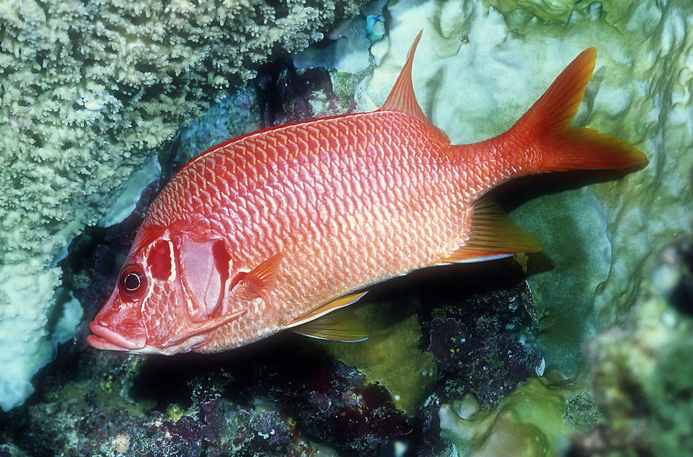

鱼类
特征：水栖动物（生活于水中）。皮肤有鳞片覆盖，属变温动物。具有鳍（可以水中游动），用鳃呼吸的变温动物。体外受精，主要为卵生，部分为胎生及卵胎生。
鱼类，是最古老的脊椎动物。部分不同染色体数目的杂交的后代依然有生育能力。它们几乎栖居于地球上所有的水生环境，从淡水的湖泊、河流到咸水的大海和大洋。鱼类分为两个总纲：无颌总纲及有颌总纲，无颌总纲包括圆口纲、甲胄鱼纲，有颌总纲包括盾皮鱼纲、软骨鱼纲、辐鳍鱼纲，大多数鱼类是终年生活在水中，用鳃呼吸，用鳍辅助身体平衡与运动的变温脊椎动物，也有像非洲肺鱼、弹涂鱼、攀鲈能在陆地上长时间生存，以及黑鱼、黄鳝、雀鳝靠单鳔呼吸，虽然大多数鱼类是冷血动物，但很多鲨鱼和金枪鱼是半恒温的，月亮鱼则是恒温的。全球现生种鱼类共有36000多种，占已命名脊椎动物大半，且新种鱼类不断被发现，平均每年以约150种计，十多年应已增加超过1500。
鱼肉富含动物蛋白质和磷质等，营养丰富，滋味鲜美，易被人体消化吸收，对人类体力和智力的发展具有重大作用。鱼体的其他部分可制成鱼肝油、鱼胶、鱼粉等。 有些鱼类如金鱼、热带鱼等体态多姿、色彩艳丽，具有较高的观赏价值。我国有着漫长的海岸线、众多的江河湖泊，鱼的种类十分丰富。据调查，我国淡水鱼有1000多种，著名的“四大家鱼”（青鱼、草鱼、鲢鱼、鳙鱼）和鲤鱼、鲫鱼等都是我国主要的优良淡水鱼品种；我国的海洋鱼已知的约有2000种，常见的有带鱼、大黄鱼、巨石斑鱼等，以及中华鲟、大马哈鱼、大西洋鲑等洄游鱼类。